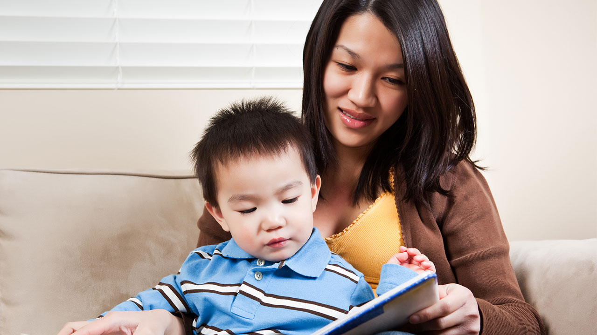

Being 2 comes with its challenges, but it's also an exciting time for both you and your child.
They are starting to better understand theworld around them, and it's fun to watch their
newfound curiosity and imagination come alive.
They are turning into their own little person.